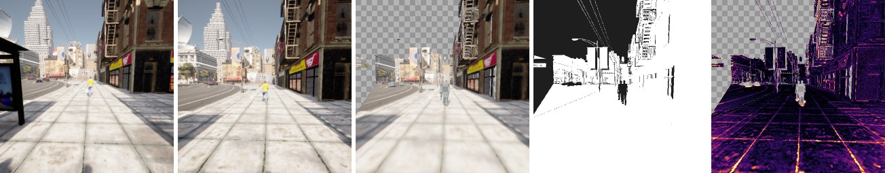
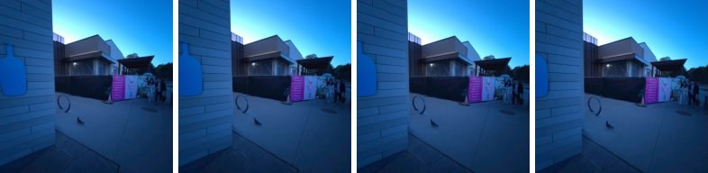
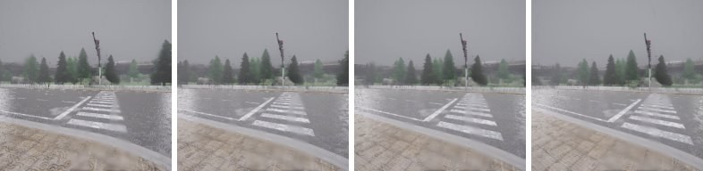
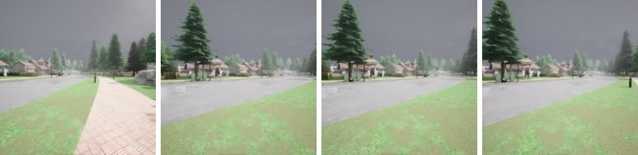

Imagining traversals from sparse egocentric observations and a goal image requires predicting where to move and what to see. Yet joint generation can produce camera trajectories that disagree with viewpoint changes in the video. We introduce WAMderer, a spatially grounded world-action generation framework that jointly models camera motion and visual observations using image-aligned camera-ray tokens and shared spatiotemporal positional encoding. To capture 3D scene structure, we further introduce an auxiliary depth branch predicting depth from shared features. We incorporate goal-relative supervision to encourage movement toward the destination, and develop a geometry-guided residual consistency loss to promote coherent visual predictions across viewpoints. We construct a CARLA traversal dataset with aligned RGB, depth, and camera poses, and evaluate video-action coherence by comparing predicted trajectories with motion recovered from generated videos. Experiments on synthetic and unseen real-world benchmarks demonstrate superior performance across evaluation metrics.
Since camera motion determines what becomes visible while unseen scene structure influences which movements are plausible, imagining a coherent traversal requires predicting where to move and what to see together. Yet even a geometry-aware joint model can generate plausible observations whose viewpoint changes disagree with its own predicted camera. How can we jointly generate camera motion and visual observations that describe the same geometrically coherent traversal?

Given historical observations, a start anchor and a goal anchor, WAMderer jointly generates the RGB frames and the camera actions of the traversal, without a predefined intermediate trajectory or scene geometry, using one pretrained video diffusion transformer trained with flow matching on both modalities.

Camera actions are represented as dense Plücker raymaps and encoded with the same video VAE as the RGB frames.
Camera-ray tokens use a coarser grid than visual tokens but share their 3D RoPE coordinates.
An auxiliary head on the camera-ray features predicts the egocentric direction and distance to the goal.
During training, the goal image is randomly swapped for a different-weather image of the same pose.
A DPT head on intermediate DiT features predicts disparity with a scale-and-shift-invariant loss.
Flow-matching residuals are warped across views with ground-truth depth and poses and matched on visible pixels.


Camera rays describe the viewing geometry but not the scene structure. We add auxiliary depth prediction and a geometry-guided residual consistency loss. Ground-truth geometry is used only during training (results).
A four-segment real-world rollout. The point cloud uses our predicted depth and predicted camera poses (colored with ground-truth RGB). Yellow: camera path; red: current camera. Depth: per-frame log depth, near = red.

Warping shown in RGB on a CARLA training clip. Even ground-truth views differ after warping (right), so we align residuals rather than latents; a perfect reconstruction has zero residual and is not penalized. Sky, occluded and moving pixels are masked out.
A coherent generation requires the predicted camera motion to explain the viewpoint changes depicted in the generated video. Action Faithfulness and Video Motion Accuracy compare each output to ground truth separately, and multiple valid paths may connect the same start and goal. Video–Action Coherence measures the agreement between the two directly.
From four history frames and a goal image, WAMderer generates the camera trajectory, the video and the depth of a 77-frame (4.8 s) traversal. Ground truth is shown for reference only. Top view: dashed = ground-truth path, lilac = our predicted camera; the cone shows where the camera looks, the dial its heading.

history frames goal
goal
history frames goal
goalAll methods receive the same start observation and goal image; none receives the ground-truth trajectory. Right: camera paths seen from above, each anchored at the start camera and scaled to the ground-truth length.

Does the generated video actually move the way the predicted camera says? The camera recovered from our generated video (orange) coincides with our predicted camera (lilac).

history frames goal
goalBaseline on top, ours below. The 3D scenes are reconstructed by Depth Anything 3 from each method’s generated frames alone (for every method, ours included). Two camera paths are drawn into them: the camera the method itself planned or predicted (solid), and the camera Depth Anything 3 recovers from the same video (dashed cyan). As in the video–action coherence metric, the predicted path is aligned to the recovered one by a single similarity transform (Umeyama on camera centres), the same for every method. When camera and video agree, the two paths overlap.
Alongside the video, WAMderer predicts the direction to the goal (compass, relative to the viewing direction) and the remaining distance. Lilac: predicted; white: ground truth.
 history frames
history framesThe same traversal conditioned on the original goal image and on an appearance-edited goal of the same place and viewpoint (season / time of day). The traversal stays the same.
WAMderer can also be given the camera trajectory instead of predicting it: with the ground-truth trajectory as input, the video follows the ground truth.
 goal
goalLonger real-world traversals generated in four consecutive segments, each toward its own goal. Left: ground-truth (top) and generated (bottom) frames. Middle: point cloud from ground-truth depth and poses. Right: point cloud from our predicted depth and camera trajectory.
Evaluated on the CARLA validation benchmark (synthetic, held-out town) and the unseen real-world benchmark. Video quality: FVD; goal reaching: Goal SR; 3D consistency: MEt3R. Action Faithfulness compares the predicted trajectory with ground truth, Video Motion Accuracy compares the trajectory recovered from the generated video (DA3) with ground truth.
| Video Quality | Goal | Action Faithfulness | Video Motion Accuracy | 3D Cons. | |||||||
|---|---|---|---|---|---|---|---|---|---|---|---|
| Method | τA | FVD16↓ | FVDall↓ | SR↑ | CamMC↓ | TransErr↓ | ATE/Len↓ | CamMC↓ | TransErr↓ | ATE/Len↓ | MEt3R↓ |
| Video only | |||||||||||
| Wan2.1-FLF2V-14B | – | 597.7 / 565.4 | 680.6 / 807.0 | 0.183 / 0.233 | – | – | – | 0.666 / 0.455 | 0.600 / 0.295 | 0.108 / 0.078 | 0.081 / 0.097 |
| Wan2.1-VACE-14B | – | 562.3 / 488.9 | 761.4 / 921.8 | 0.142 / 0.183 | – | – | – | 0.623 / 0.458 | 0.536 / 0.307 | 0.104 / 0.081 | 0.073 / 0.041 |
| Wan2.2-Fun-A14B-InP | – | 361.1 / 376.9 | 412.2 / 545.9 | 0.267 / 0.292 | – | – | – | 0.493 / 0.424 | 0.399 / 0.261 | 0.073 / 0.070 | 0.038 / 0.032 |
| Pose-then-generate | |||||||||||
| VGGT-Ω + SEVA | Interpolation | 511.0 / 514.8 | 499.8 / 765.2 | 0.733 / 0.450 | 0.533* / 0.375* | 0.442* / 0.232* | 0.078* / 0.060* | 0.543 / 0.371 | 0.456 / 0.227 | 0.080 / 0.060 | 0.035 / 0.036 |
| VGGT-Ω + VGGT-Diff | Interpolation | 535.7 / 591.9 | 581.9 / 1038.7 | 0.892 / 0.483 | 0.533* / 0.375* | 0.442* / 0.232* | 0.078* / 0.060* | 0.554 / 0.373 | 0.465 / 0.231 | 0.081 / 0.060 | 0.034 / 0.033 |
| Plan-then-generate | |||||||||||
| NWM | NoMaD | 1045.3 / 765.8 | 1120.6 / 935.4 | 0.000 / 0.017 | 0.576* / 0.547* | 0.433* / 0.344* | 0.075* / 0.087* | 1.518 / 1.079 | 1.447 / 0.945 | 0.264 / 0.240 | 0.025 / 0.024 |
| DeepVerse | NoMaD | 692.5 / 785.2 | 617.5 / 1138.9 | 0.133 / 0.058 | 0.576* / 0.547* | 0.433* / 0.344* | 0.075* / 0.087* | 0.468 / 0.489 | 0.360 / 0.307 | 0.063 / 0.079 | 0.036 / 0.029 |
| LingBot-World | NoMaD | 442.7 / 685.9 | 559.6 / 738.0 | 0.167 / 0.117 | 0.576* / 0.547* | 0.433* / 0.344* | 0.075* / 0.087* | 0.636 / 0.553 | 0.490 / 0.360 | 0.085 / 0.091 | 0.062 / 0.037 |
| EgoWM | NoMaD | 582.2 / 625.8 | 1091.1 / 1044.2 | 0.083 / 0.050 | 0.576* / 0.547* | 0.433* / 0.344* | 0.075* / 0.087* | 0.760 / 0.554 | 0.645 / 0.373 | 0.071 / 0.094 | 0.027 / 0.023 |
| Joint action-video generation | |||||||||||
| Aether | Joint | 333.9 / 340.5 | 262.2 / 414.6 | 0.592 / 0.375 | 0.646 / 0.455 | 0.569 / 0.342 | 0.102 / 0.090 | 0.592 / 0.400 | 0.509 / 0.289 | 0.091 / 0.078 | 0.038 / 0.035 |
| WAMderer (Ours) | Joint | 261.2 / 328.0 | 209.9 / 387.4 | 0.708 / 0.567 | 0.278 / 0.353 | 0.170 / 0.145 | 0.032 / 0.041 | 0.331 / 0.355 | 0.243 / 0.169 | 0.044 / 0.041 | 0.047 / 0.058 |
Quantitative comparison. * Action errors computed from predefined trajectories (VGGT-Ω pose estimation with SLERP interpolation, or NoMaD planning), identical for methods sharing the same trajectory. Ground-truth videos have MEt3R scores of 0.039 (synthetic) / 0.045 (real). Bold: best, underline: second best.
| Depth Estimation | Video–Action Coherence | ||||||
|---|---|---|---|---|---|---|---|
| Method | AbsRel↓ | δ1↑ | δ1.5↑ | RotErr↓ | TransErr↓ | CamMC↓ | ATE/Len↓ |
| Aether | 0.506 / 0.502 | 0.571 / 0.582 | 0.739 / 0.816 | 4.134 / 4.054 | 0.048 / 0.049 | 0.119 / 0.118 | 0.057 / 0.052 |
| WAMderer (Ours) | 0.175 / 0.190 | 0.801 / 0.707 | 0.903 / 0.847 | 1.864 / 1.862 | 0.018 / 0.016 | 0.052 / 0.062 | 0.022 / 0.023 |
Geometric consistency. Depth estimation and video–action coherence of Aether (visual planning mode) and WAMderer.

| Video Quality | Goal | Action Faithfulness | Video–Action Coherence | 3D Consistency | ||||||||
|---|---|---|---|---|---|---|---|---|---|---|---|---|
| Variant | FVD16↓ | FVDall↓ | SR↑ | RotErr↓ | ATE/Len↓ | CamMC↓ | RotErr↓ | ATE/Len↓ | CamMC↓ | MEt3R↓ | PSNR↑ | LPIPS↓ |
| (I) Joint FM (compact action token) | 329.74 | 384.11 | 0.467 | 11.59 | 0.053 | 0.432 | 3.74 | 0.029 | 0.108 | 0.096 | 15.129 | 0.495 |
| (II) (I) + spatially aligned action token | 289.62 | 253.62 | 0.542 | 10.33 | 0.038 | 0.346 | 2.83 | 0.026 | 0.076 | 0.061 | 15.744 | 0.457 |
| (III) (II) + goal aux. | 246.31 | 238.73 | 0.633 | 8.73 | 0.037 | 0.309 | 3.55 | 0.029 | 0.096 | 0.067 | 16.590 | 0.416 |
| (IV) (III) + depth prediction | 261.90 | 225.71 | 0.667 | 8.09 | 0.032 | 0.279 | 2.87 | 0.024 | 0.075 | 0.052 | 16.585 | 0.416 |
| (V) (IV) + residual consistency (Ours) | 261.17 | 209.88 | 0.708 | 7.89 | 0.032 | 0.278 | 1.86 | 0.022 | 0.052 | 0.047 | 16.646 | 0.401 |
Ablation study on the synthetic (CARLA) validation benchmark.
@article{wamderer2027,
title = {WAMderer: Spatially Grounded World-Action Model for Coherent Traversals},
author = {TODO},
journal = {arXiv preprint},
year = {2027}
}